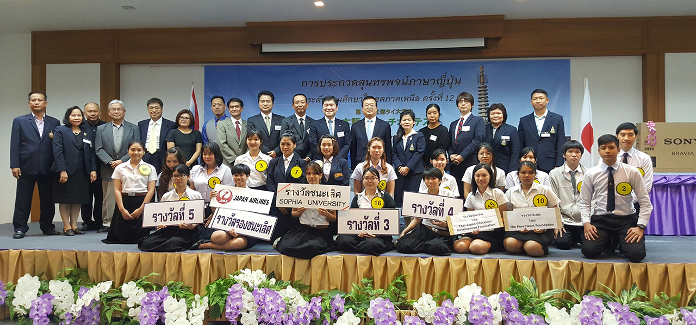
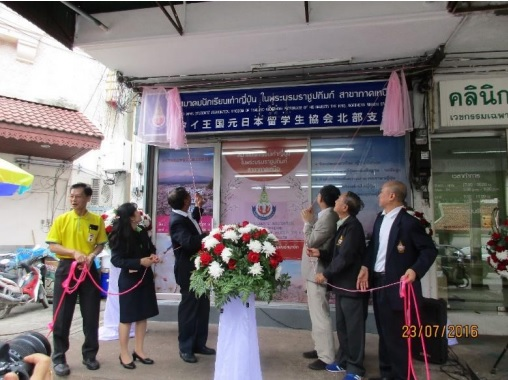

◇ มิตรภาพที่เชื่อมสองวัฒนธรรมสานสัมพันธ์
สานสัมพันธ์
ไทย–ญี่ปุ่น
จากรุ่นสู่รุ่น
พื้นที่แห่งมิตรภาพของนักเรียนเก่าญี่ปุ่น
ร่วมเรียนรู้ แลกเปลี่ยน และสืบสานสายสัมพันธ์
ของชุมชนไทย–ญี่ปุ่นในภาคเหนือ
๒๕๒๘
จุดเริ่มต้นของการรวมตัว
ของนักเรียนเก่าญี่ปุ่นในเชียงใหม่



สำหรับผู้เข้าสอบก้าวต่อไป
ก้าวต่อไป
บนเส้นทางภาษาญี่ปุ่น
รวมข่าวการสอบ JLPT และ EJU
กำหนดการ ประกาศห้องสอบ และผลสอบ
โปรดตรวจสอบปีและรอบสอบในแต่ละประกาศ

จากวันแรก สู่สายสัมพันธ์ที่ยั่งยืนรากฐานของมิตรภาพจากการพบปะเล็ก ๆ
จากการพบปะเล็ก ๆ
สู่ชุมชนที่เติบโตไปด้วยกัน
สมาคมเป็นพื้นที่เชื่อมโยงนักเรียนเก่าญี่ปุ่น และผู้สนใจภาษาและวัฒนธรรมญี่ปุ่น ผ่านกิจกรรม การเรียนรู้ และการแลกเปลี่ยนระหว่างผู้คน
อ่านเรื่องราวของสมาคม ↗